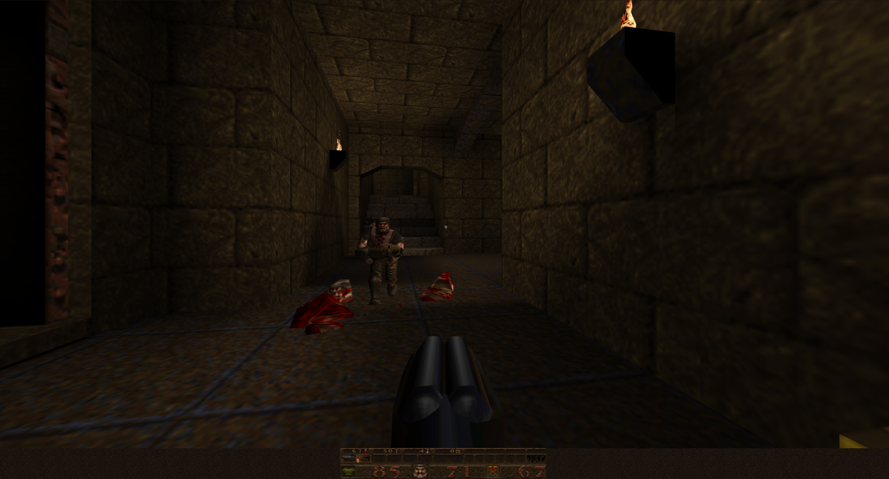
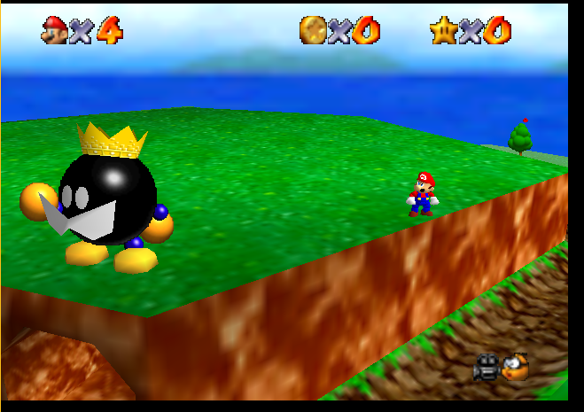

Forward: when I talk about things feeling old, I don’t mean in terms of graphics. Personally I don’t care at all about game graphics quality.
The first game that I played this week is Quake 1. Its place in the history of computer graphics is that it was id software's first fps to use 3d polygons instead of sprites. Because they created Doom, probably the most important fps release until Quake, it was unlikely that Quake would not be a hit. Because of its 3d technology, player movement was nothing like anything else available at the time, with mechanics like rocket jumping and bunny hopping. In my personal playing of it, though, I would say that I found that it did not hold up as well as Doom did, at least for me. I imagine I would have been very impressed with it at the time, but to me, Doom gameplay feels like the best of its kind. Quake feels like a watered down, not quite figured out yet version of the kinds of fps games that exist today. A good parallel I would draw is Painkiller - which in my opinion feels to me what I bet Quake felt like to those playing it when it was released. That isn’t to say I didn’t enjoy it, it is still incredibly satisfying to shoot a grenade into a group of monsters and blow them to bits. However, the control still felt on the clunky side, and kept me from fully immersing myself in the game.

The second game that I played this week is Super Mario 64. Admittedly, I am slightly biased on this one, because I enjoy the game quite a bit. It is incredibly important in history because it was the earliest and most influential 3d platformer on a home console. I really enjoy this game. As a kid, I loved just exploring the world, not necessarily even playing the game the right way, but just wandering around the environments and taking it all in. Coming back to it and playing it just trying to get to the stars, it is still a really fun game to play with. That being said, I do think that it has begun to show its age a little, especially when compared to the next entry in the franchise. Just like I said about Quake, Mario 64 shows that it was released early in the history of 3d technology. Little things like movement and camera feel a little bit awkward, and are not handled the same way we handle them today. Another game I played earlier in the semester demonstrated this as well - in Banjo Kazooie, originally, the camera controls were the same as Mario 64, where you rotated the camera position to fixed points around the character. However, on the Xbox 360 port of the game, they added a camera that you could control freely with the second joystick. These modern ideas are a lot more natural feeling and are better for having direct control. Mario 64 is still an excellent game and very important in history, but it definitely shows its age.

Whether it is in the theater or in your living room, computer graphics play a significant role in modern film-making and video games. How important are these visuals to you in terms of the overall experience? Consider, when do graphics detract rather than enhance these mediums and how do you compare modern 3D computer graphics to older say hand-drawn animation or 2D sprite-based graphics?
As far as I am concerned, the visual character of the visuals are much more important than the actual graphical quality. A low resolution game that has an amazing art style (see, Yoshi's Island, Shovel Knight) is infinitely more appealing to me than a game like Monster Hunter World, which has so much visual pollution it is hard to tell what to look at, even though the game can be run at 4k. I care about atmosphere, I care about gameplay, and I care how painful the game is to look at, not which graphical technologies are behind it and how sophisticated they are. I think that modern graphics can detract when they get in the way of the core of the gameplay itself. I can see an argument where better graphics would lead people to find themselves more immersed in a game, but I don’t really believe it. Some of the games that I have gotten the most immersed in recently have very minimal graphics. When I am playing, I can hardly notice the graphics. One example is League of Legends. When I would play it, I couldn’t tell you how good the graphics were. Then, when I would go watch over my brother's shoulder, on the same exact computer, I would be impressed with how it looked. Personally, I would be happy with more sprite based graphics or hand drawn animations if they meant more interesting content and less focus on the complexity and realism of a game.
I think that for movies, I feel like I do about early 3d games. They look worse than 2d games from the same era, because the technology was just not caught up. Most of the animated movies I like are either hand drawn or flash animation, and I do not really care for much CGI. I think it distracts from the experience when it is trying to be realistic vs when it is trying to be cartoonish. However, I don’t really enjoy film as a medium very much anyways.